Introduction
The Company Information module sits in the General settings section and acts as the central place for organisational data and system configuration. Administrators use it to set company details, fiscal year settings, working hours, shift hours, holidays, currency management and data retention policies.
Because these values are system-wide, they feed into reporting, scheduling, financial calculations and workflows across the CRM.
Key Features and Functionalities
1. Accessing Company Information
Go to Settings → General → Company Information. From there, administrators can view and manage the organisation's details and configuration, which are arranged across tabs.
2. Company Details Tab
Purpose: manage the core organisational profile.
- Company profile: logo, name, phone, fax, email, website and address (country, state/province, city, postal code).
- Operational details: time zone, the languages the company offers, currency, number of employees and annual revenue. A user's language list is limited to the languages chosen here. A language already saved on a user stays selectable.
- Editing: use the pencil icon in the top-right corner of the tab.
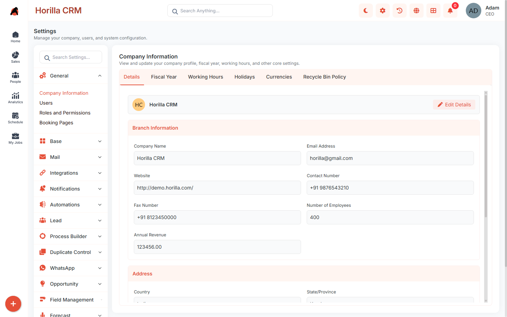
3. Fiscal Year Tab
Purpose: configure the financial year used for reporting and forecasting.
- Fiscal Year Type: Standard Fiscal Year (the default) or Custom Fiscal Year, which is set up through the Manage Fiscal Year button.
- Start Date Month: January by default; it can be changed.
- Display Fiscal Year Based On: Starting Year or Ending Year.
- Preview Calendar: shows how the fiscal year will be laid out.
- Manage Fiscal Year: switches between the standard and custom fiscal year.
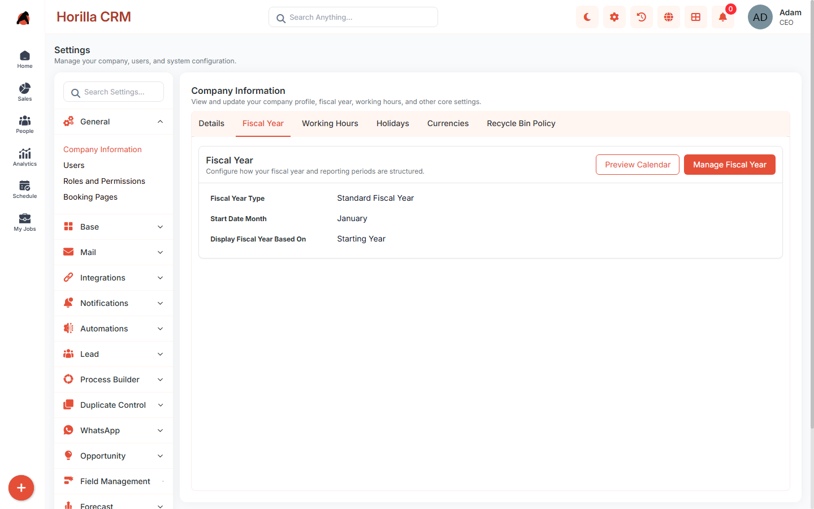
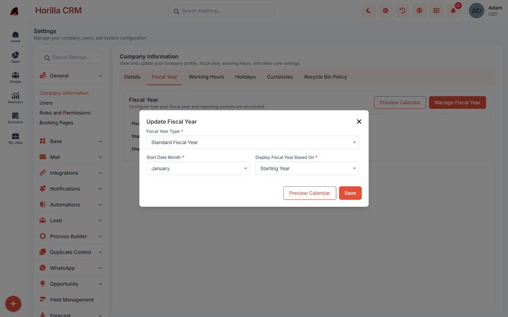
Custom Fiscal Year options
When Custom is selected, the calendar can follow either a year-based or a quarter-based pattern.
| Pattern type | Option | Structure |
|---|---|---|
| Year-based | 3-3-3-4 | Q1 three periods, Q2 three, Q3 three, Q4 four |
| Year-based | 3-3-4-3 | Q1 three periods, Q2 three, Q3 four, Q4 three |
| Year-based | 3-4-3-3 | Q1 three periods, Q2 four, Q3 three, Q4 three |
| Year-based | 4-3-3-3 | Q1 four periods, Q2 three, Q3 three, Q4 three |
| Quarter-based | 4-4-5 | Each quarter has three periods of 4, 4 and 5 weeks |
| Quarter-based | 4-5-4 | Each quarter has three periods of 4, 5 and 4 weeks |
| Quarter-based | 5-4-4 | Each quarter has three periods of 5, 4 and 4 weeks |
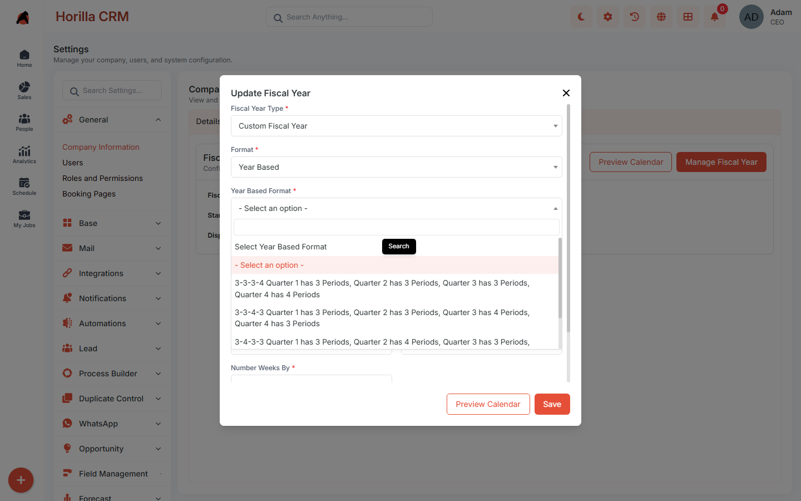
Fields to fill
| Field | Description |
|---|---|
| Start Date Month | Month in which the fiscal year starts. |
| Start Date Day | Exact day the fiscal year starts. |
| Week Start Day | First day of the week, for example Sunday or Monday. |
| Display Fiscal Year Based On | Label the year by its starting year or its ending year. |
| Number of Weeks By | How weeks are counted — monthly or quarterly. |
| Period Display Option | How periods are displayed in reports. |
4. Working Hours Tab
The tab is Working Hours. It has two buttons: Business Hours and Shift Hours.
Purpose: define working hours and schedules. More than one schedule can exist, for example a 24x7 schedule alongside standard office hours, and one of them can be marked as the default.
The management table lists Name, Time Zone, Business Hour Type, Week Start Day, Is Default and Actions. From Actions you can edit or delete a schedule, and new schedules can be created.
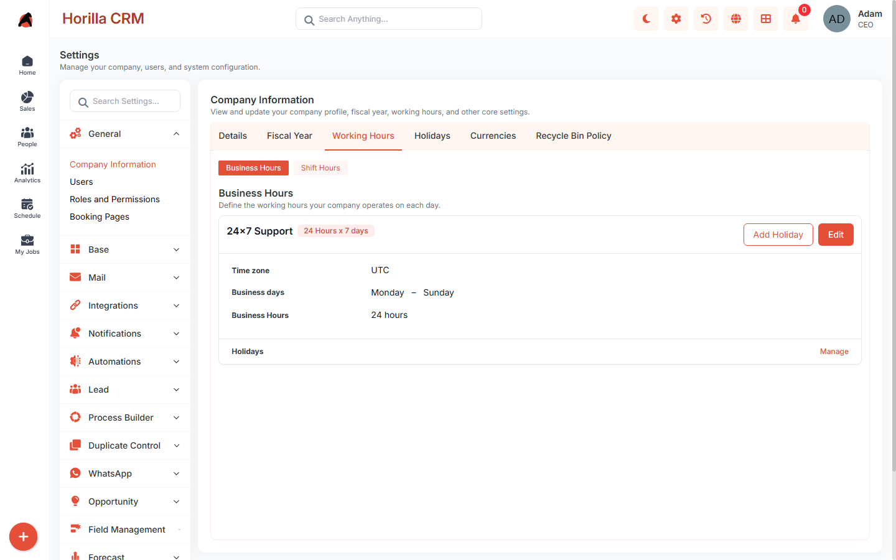
Create Business Hours
| Field | Description |
|---|---|
| Name | Descriptive name for the schedule. |
| Time Zone | Timezone the schedule applies to. |
| Week Start Day | Day the week starts on, such as Sunday or Monday. |
| Business Hour Type | Type of schedule, for example 24x7 or office hours. |
| Is Default | Checkbox making this the default schedule. |
| Is Active | Checkbox controlling whether the schedule is active. |
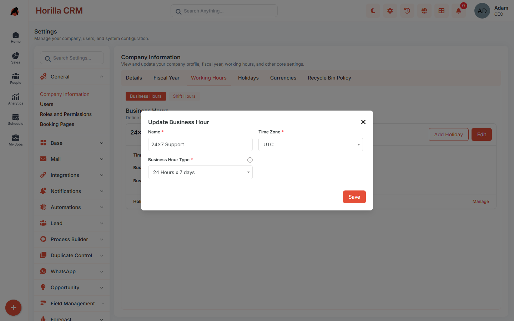
5. Shift Hours
On Working Hours, click Shift Hours. The heading is Shift Hours, and the line under it reads Set up shift-based working hours for
employees with non-standard schedules.
Click Add to open Create Shift Hour. The list shows Name, Shift Hours, Week Days, Time
Zone and Assigned Users, with Edit and Delete. Shift Hours is Same Hour Every Day or Different Hour
Per Day. When the hours differ by day, Week Days says Hours vary by
day. When none exist yet, the panel says Nothing to show yet. Please add your
Shift Hours.
and offers Add New.

Create Shift Hour
| Field | Description |
|---|---|
| Name | Name of the shift. Placeholder: e.g. US Shift, APAC Support. |
| Time Zone | Timezone the shift uses. |
| Shift Hours | Same Hour Every Day or Different Hour Per Day. |
| Week Days | Sunday through Saturday. Tick the days this shift covers. |
| Default Start Time / Default End Time | Hours used when Shift Hours is Same Hour Every Day. Times are 24-hour: 5:30 PM is 17:30. |
| Break Hours 1 / Break Hours 2 | No break hours, Same hours every day or Different hours every day. |
| Assigned Users | People who work this shift. Filter narrows the list. |
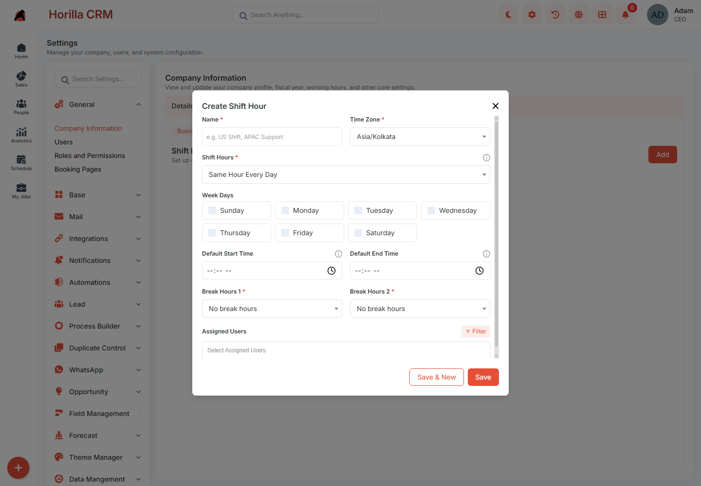
Save stores the shift. Save & New stores it and opens a blank form. People chosen under Assigned Users see those hours in My Settings → Shift Hours.
6. Holidays Tab
Purpose: maintain the company holiday calendar. Both single-day and multi-day holidays are supported, as are holidays that recur every year such as New Year or Independence Day.
The management table lists Holiday Name, Start Date, End Date, Recurring and Actions, where holidays can be edited, deleted or created.
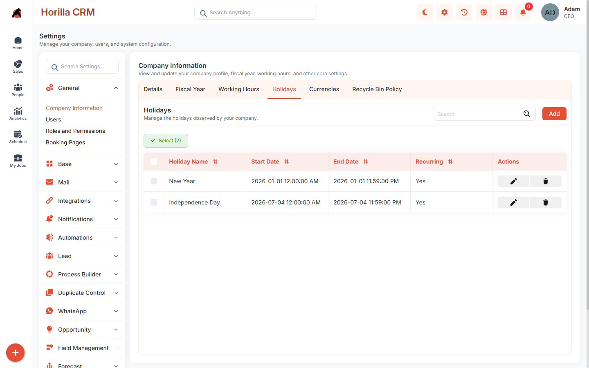
Create Holiday
| Field | Description |
|---|---|
| Holiday Name | Name of the holiday. |
| Start Date / End Date | Duration of the holiday. |
| All Users | Applies the holiday to every user. |
| Specific Users | Applies the holiday only to the selected users. |
| Recurring | Repeats the holiday annually. |
| Holiday Frequency and Yearly Repeat Type | Settings that define the repeat pattern. |
Each mistake is shown on its field. A date that is already a holiday is refused. The repeat choices explain how an annual holiday is applied.
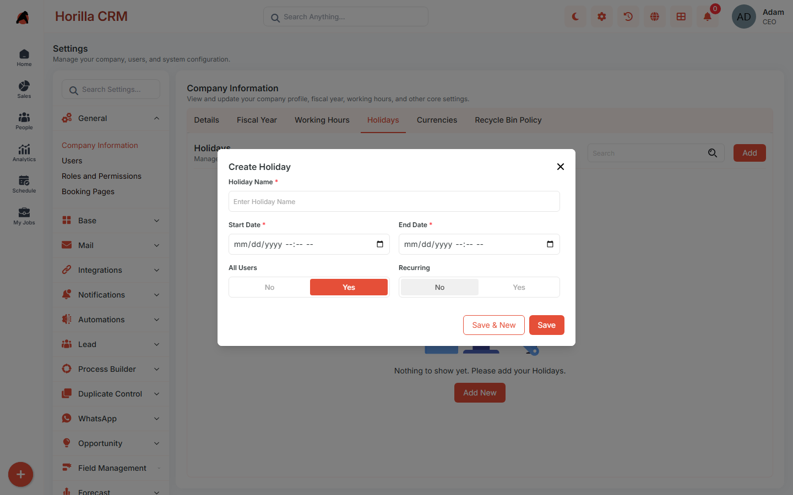
7. Currencies Tab
Purpose: manage the company currency, live rates and dated rates. Currency management stays on this tab. It is not part of the company create or edit form.
The tab has three panels once multiple currencies are on: Rates & Formatting, Currencies and Dated Exchange Rates.
Rates & Formatting
- Default Currency: the currency every other currency is converted from. Changing it recalculates conversion rates. A preferred currency on a user stays inside that user's company.
- Enable Multiple Currency: allow records in more than one currency. Turning it off hides the other currency options.
- Auto Fetch Exchange Rate: fetch rates when a currency is added, when the default changes, and when rates are refreshed. Turn it off to type every rate.
- Keep Rates Up To Date: refresh the other currencies daily or weekly. The default currency stays at 1. Refresh Now fetches immediately, and Last Refreshed shows when that last happened.
- Rate alert: administrators are told when a rate moves past the configured threshold.
- Keep Rate History: save a dated exchange rate whenever a rate is added or changes, so older records keep the rate that applied then.
- Formatting: decimal places and number grouping for amounts.
Currencies
The currency table shows Currency Code, Name, Default Currency, Conversion Rate, Decimal Places and Number Grouping Format. Rows are edited with the pencil icon and removed with the trash icon.
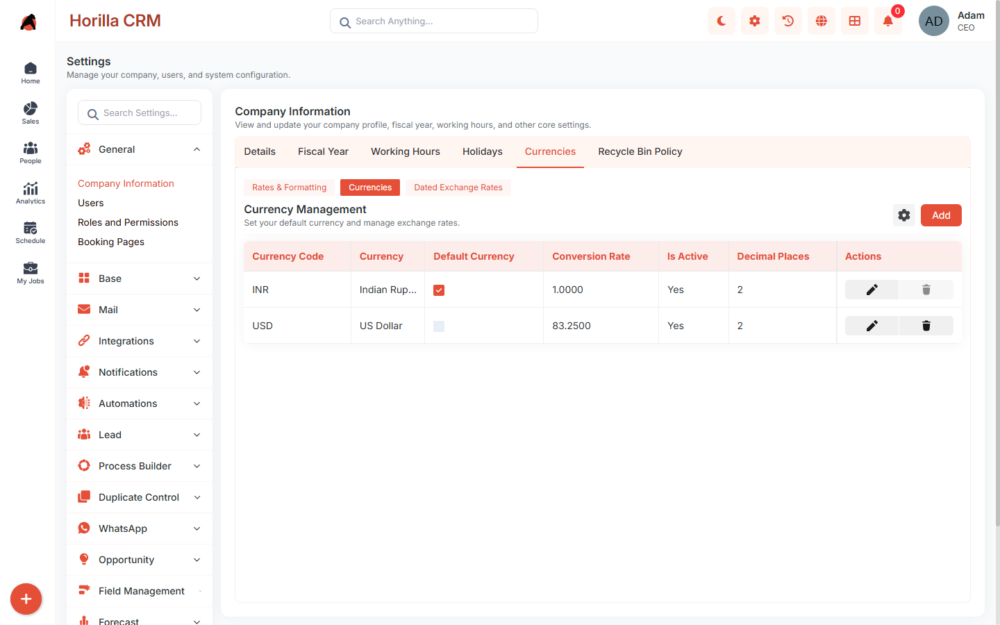
Add New Currency
| Field | Description |
|---|---|
| Currency | Chosen from a dropdown. |
| Conversion Rate | Rate against the default currency. |
| Decimal Places | Precision used for amounts. |
| Number Grouping Format | Grouping style, for example 1,234,567. |
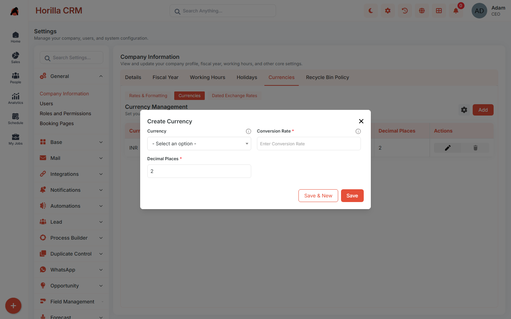
Additional currency features
- Change Default Currency: done from the default-currency control; the system recalculates rates automatically.
- Dated Exchange Rates: set a different conversion rate for a date range. Pick the range, or use New Exchange Rates. A dated rate can be edited or deleted.
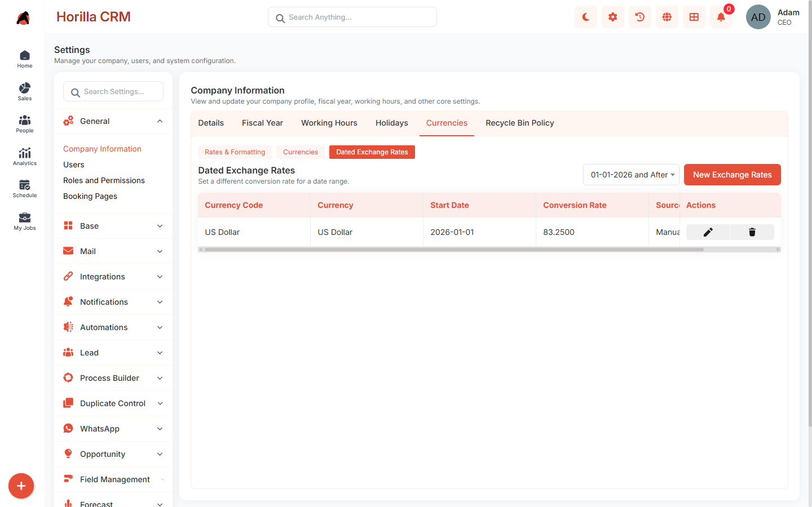
8. Recycle Bin Policy Tab
Purpose: control how long deleted records can be recovered.
- Default Expire Days: the retention period for deleted records; the default is 30 days. When that period ends, the records are removed permanently.
- No expiry: keep deleted records until someone removes them. While this is on, the days field and its save button stay disabled.
- Save: applies the updated retention setting.

Benefits
- Organisation-level settings are configured in one central place.
- Multi-currency support with flexible exchange rates.
- Flexible scheduling through business hours, shift hours and holiday calendars.
- Fiscal year settings feed analytics and forecasting.
- Retention controls support data governance.
- A tab-based layout with clear action buttons.
- Settings apply system-wide across CRM modules.
- Scales to multiple currencies, schedules and policies.